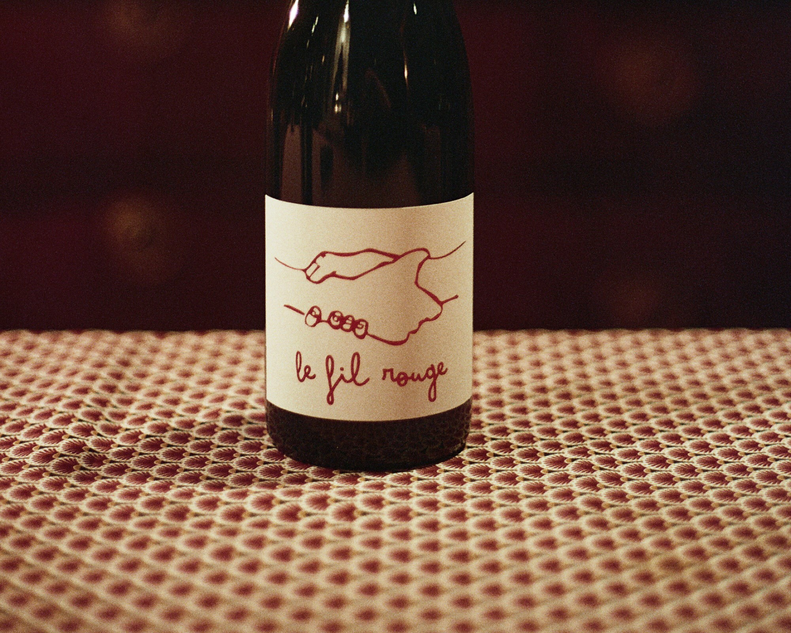
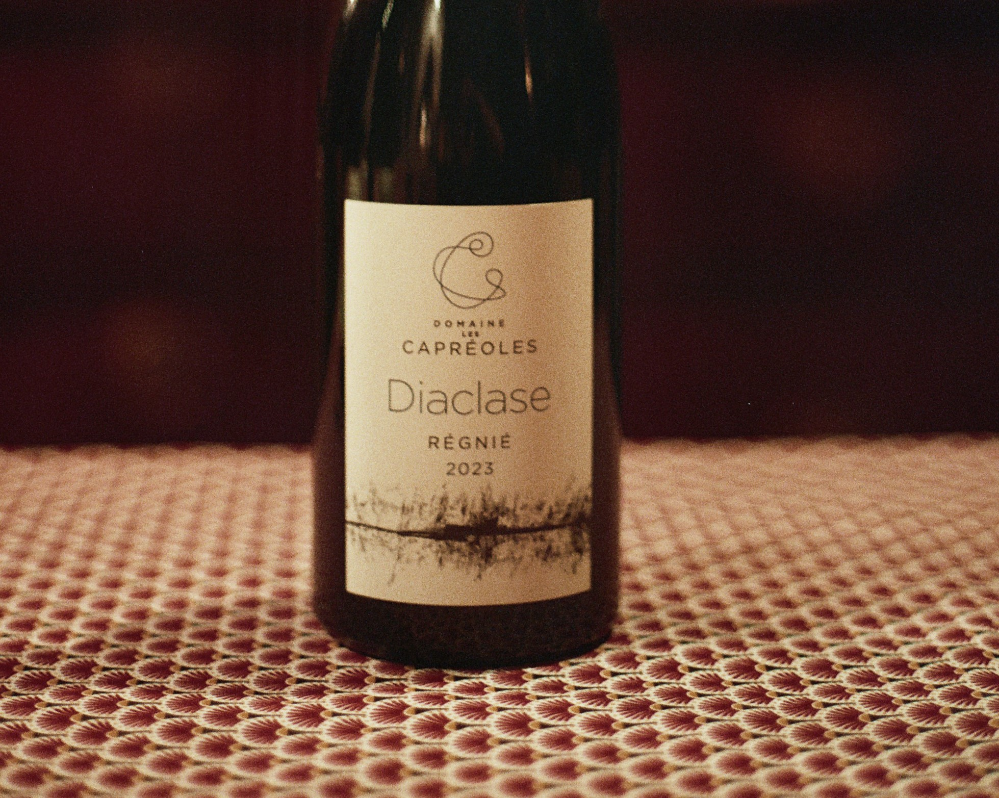
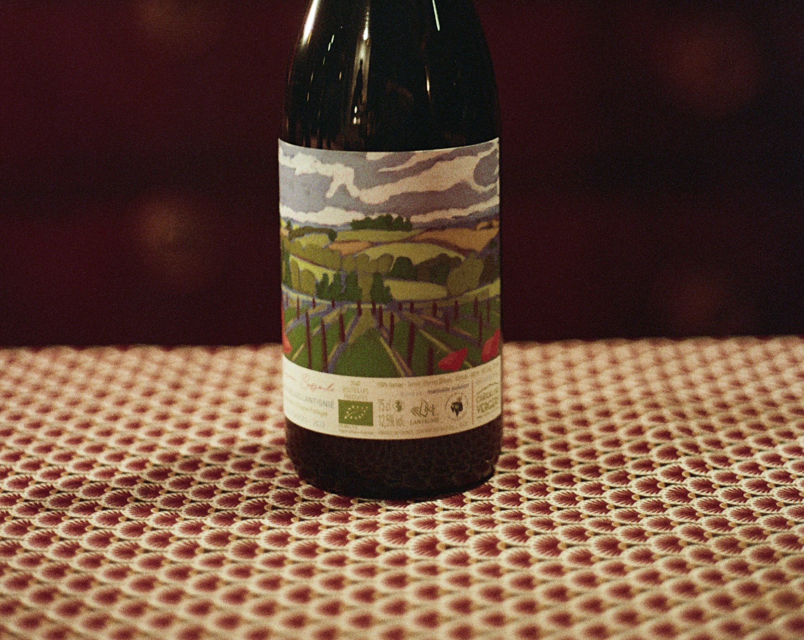

Wijn 1
Music
“A wine of threads and contrasts.
Light in colour, deep in feeling.
It moves with a quiet rhythm.”
Wine speaks to more than the palate. It carries memory, place and feeling —
and can be paired with many forms of culture and atmosphere.
Music, architecture, paintings, cinema, literature, and more.
Music
“A wine of threads and contrasts.
Light in colour, deep in feeling.
It moves with a quiet rhythm.”

Cinema
“Light, joyful and a little mischievous.
A wine for warm light, movement,
and a story still unfolding.”

Paintings
“A wine of balance and light.
Quiet tones, gentle movement,
and an invitation to contemplate.”

Architecture
“Stone, tension and balance.
A precise wine with a grounded,
quietly expressive structure.”
No pairings are available in this category yet.